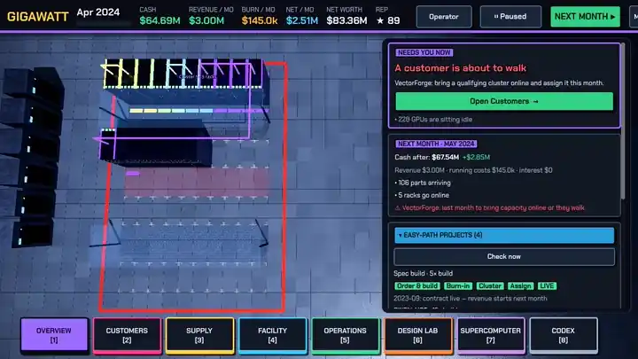
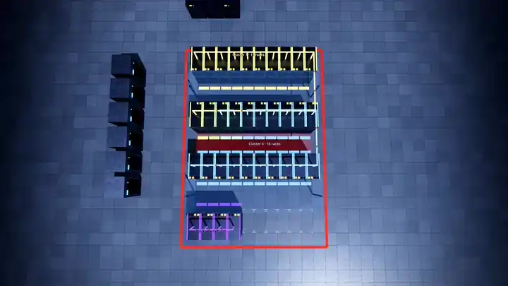
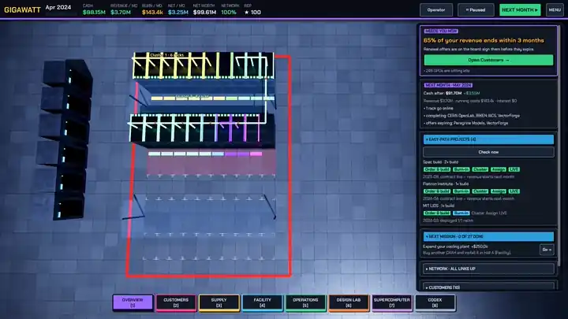

Short looping clips of the game: the loop, the rack showroom, the cabling, and the looks you can give your hall.
New to the game? These clips show the main moves in about ten seconds each. The first-hour walkthrough explains every step in words.
The loop in one clip
Open the drawers from the dock, look at the hall in thermal view, then let months pass and watch the revenue, burn and cash in the top bar move.
Picking a rack in the Supply drawer
Each platform in the strip along the bottom turns the rack on the turntable. Drag to spin it, open the door, and switch on the cables to see how it is wired. The card beside it says whether your hall can power and cool it.
Cabling you can read

Zoom in on a rack and the rear shows its real cabling: one cable per network port to the top-of-rack switch, tied in vertical cable managers, each with a tag. Rack-scale systems add a purple NVLink spine.
Make it yours

The Site screen changes the floor, the rack finish, the walls, the light and the accent colour. See Make it yours.

Seven interface themes, four dark and three light.